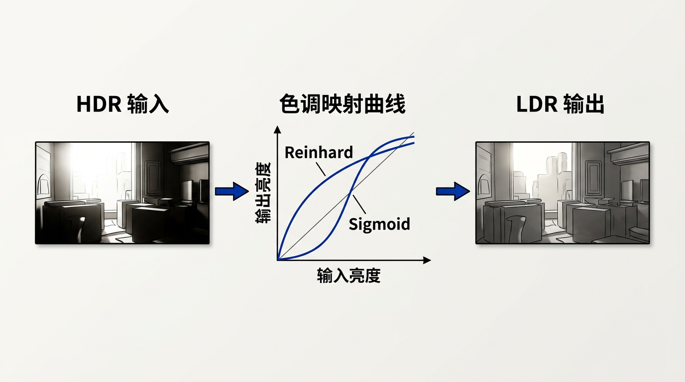

本讲义基于 Steve Marschner & Peter Shirley 所著《虎书》（Fundamentals of Computer Graphics）第5版第20章（p.587-611）色调再现。
HDR→LDR 的关键环节——真实世界与显示器的动态范围、Reinhard/对数/指数全局算子、Fattal 梯度域、双边滤波、ACES/Filmic sigmoid、HDR 元数据。
本版插画采用 Guizang 材质插画风格重新绘制。

色调再现（Tone Reproduction），或称色调映射（Tone Mapping），是计算机图形学中将高动态范围（HDR）图像转换为低动态范围（LDR）显示设备可呈现图像的经典问题。HDR 图像通常每个颜色通道以浮点数（float）存储，亮度范围可跨越数个甚至数十个数量级；而普通显示器仅能显示约 100:1 到 1000:1 的对比度，颜色通道被量化为 8 位（0-255）整数。这一巨大的信息差距迫使我们必须设计智能的压缩算法。
术语"色调映射"来源于数字摄影领域——摄影师通过调整胶片和相纸的感光曲线来决定最终打印的"色调"。在图形学中，我们借用这一概念来描述从场景辐射度到显示像素值的非线性映射过程。色调映射的历史可以追溯到摄影术的黎明时期：19 世纪摄影师安塞尔·亚当斯（Ansel Adams）提出的分区曝光法（Zone System）——将场景亮度分为从 0（纯黑）到 X（纯白）的 11 个区域——本质上就是一种手动色调映射策略。
一个理想的色调映射算子应当同时满足三个目标：(1) 压缩总体动态范围——将跨越多个数量级的场景亮度映射到显示设备的有限范围内；(2) 保留图像细节和局部对比度——纹理、边缘等高频信息在压缩过程中不应丢失；(3) 产生视觉上令人愉悦的结果——输出应避免生硬的截断、色偏或伪影。这三个目标之间存在天然的张力：压缩越激进，细节越难保留；追求视觉愉悦，又可能引入非物理的正确性。
在讨论具体方法之前，我们需要建立两个关键概念区分：场景参考（Scene-Referred）图像与显示参考（Display-Referred）图像。场景参考图像中的像素值直接对应场景中的物理辐射度（单位为 W·sr⁻¹·m⁻²），不包含任何显示设备的特性；渲染器的输出天然是场景参考的。显示参考图像中的像素值已经针对特定显示设备做了适配——例如 sRGB 色彩空间中的 [0,255] 整数。色调映射正是"场景参考→显示参考"的桥梁。
生活类比：HDR 到 LDR 的映射就像用手机拍下壮丽的日落。你的手机屏幕（LDR）亮度最多不过几百尼特，而真实日落的天空亮度（HDR）可达数万尼特。手机相机的 HDR 模式实际上就在执行色调映射——把太阳的刺眼光芒和地面的暗部细节同时压缩到一张照片中，让你在屏幕上能同时看清云彩的层次和地面的纹理。
在图形学渲染管线中，色调映射通常位于整个处理的最后阶段——在光照计算完成、所有 HDR 样本已被累积之后。它接收一个浮点帧缓冲（每个像素三个浮点数，分别对应 RGB 亮度），输出一个适合显示的低动态范围图像。正因如此，色调映射本质上是一个非线性的全局或局部图像压缩问题——输入值的范围极大，输出窗口却极小，但输出必须看起来"自然"。
想一想：如果直接把 HDR 图像线性缩放（clamp 到 [0,1]）会发生什么？为什么不能简单地让所有像素等比例缩小？
本章将系统性地展开色调映射的各个环节：首先从真实世界与显示设备的动态范围差异入手（20.2），然后讨论颜色处理管线的挑战（20.3），再回到图像的物理形成过程（20.4）。在此基础上，我们将分别学习全局算子（20.5）、梯度域算子（20.6）、空间算子（20.7）、频率域算子（20.8），以及目前在工业界广泛使用的 Sigmoid 曲线方法（20.9）。最后简要介绍其他方法与夜间色调映射的特殊问题（20.10-20.12）。
动态范围（Dynamic Range）定义为场景或设备中最大可分辨亮度与最小可分辨亮度之比。在摄影和图形学中，动态范围常用档位（Stops）或分贝（dB）来度量：1 档（stop）对应 2 倍亮度，因此 n 档的动态范围表示亮度比值为 2ⁿ。另一个常用单位是分贝：动态范围 = 20 × log₁₀(L_max / L_min)，即光度学版本的信噪比。
真实世界的亮度跨度惊人地宽广——以下详细表格覆盖了从极端暗视环境到直视太阳的全谱亮度分布，单位均为 cd/m²（坎德拉每平方米），也称尼特（nit）：
| 场景 | 典型亮度 (cd/m²) | log₁₀ 近似 | 相对星光比 |
|---|---|---|---|
| 无月星光（暗适应阈值） | ~0.001 | -3.0 | 1× |
| 半月夜空 | ~0.01 | -2.0 | 10× |
| 满月地面 | ~0.1 | -1.0 | 100× |
| 烛光（1 米距离） | ~1 | 0.0 | 1 000× |
| 黄昏街道 | ~10 | 1.0 | 10 000× |
| 典型室内照明 | ~100 | 2.0 | 100 000× |
| 明亮的办公室 | ~400 | 2.6 | 400 000× |
| 阴天户外 | ~1 000 - 5 000 | 3.0-3.7 | 1-5 百万× |
| 晴天阴影下 | ~5 000 - 10 000 | 3.7-4.0 | 5-10 百万× |
| 正午阳光直射地面（白纸反射） | ~30 000 | 4.5 | 30 百万× |
| 太阳表面（绝对不可直视！） | ~1.6 × 10⁹ | 9.2 | 1.6 万亿× |
| 典型 LCD 显示器黑电平 | ~0.2 - 0.5 | -0.7 至 -0.3 | — |
| 典型 LCD 显示器白电平 | ~200 - 400 | 2.3-2.6 | — |
| OLED 显示器黑电平 | ~0（真正纯黑） | -∞（理论） | — |
| HDR 显示器峰值 (DisplayHDR 1000) | ~1 000 | 3.0 | — |
| 高级 HDR 母版监视器 (Dolby Pulsar) | ~4 000 | 3.6 | — |
从上表可见，真实世界的亮度跨度超过 12 个数量级（10¹²:1，从 0.001 到 1.6×10⁹ cd/m²）。即便是去掉直视太阳后"日常"可遇到的范围（0.001 到 30 000 cd/m²），也跨越了约 7.5 个数量级（约 25 档）。
生活类比：真实世界的动态范围好比一个 100 层高楼——从最深的地下室（星光）到最高层的天台（正午阳光）。而普通显示器就相当于这栋楼的一楼大堂——它只能同时展示其中一小段楼层（比如第 47 到第 50 层）。色调映射的任务就是决定"把哪几层楼映射到大堂的有限空间里"，同时还要让人感觉看到了整栋楼。
人类视觉系统处理如此巨大动态范围的方式，是所有色调映射算子最重要的生物学参照。人眼的适应机制可以分为三个层次：
（1）瞳孔调节（瞬时，~4 档）：虹膜通过收缩或扩张瞳孔来调节进入眼球的光通量，孔径比约 16:1（即约 4 档）。这是最快的适应机制（响应时间约 0.5 秒），但范围有限。
（2）光化学适应（中等速度，~6-8 档）：视网膜上的光感受器细胞（视锥和视杆）含有对光敏感的色素分子。当光子击中色素时，色素发生漂白（bleaching），其浓度下降，感光度自动降低。在高亮度环境中，大量色素被漂白，感受器变得"不敏感"；在暗环境中，色素随时间再生，感受器逐渐变得"敏感"。这一过程需要数秒到数分钟完成——这就是你从明亮室外进入暗室需要一段时间才能看清的原因。
（3）视锥-视杆切换（暗适应，~4-6 档）：人眼有两种光感受器：视锥细胞（cones）负责明视觉（photopic vision，约 3 cd/m² 以上），提供高锐度的色彩感知；视杆细胞（rods）负责暗视觉（scotopic vision，约 0.001 cd/m² 以下），没有色彩分辨能力但灵敏度极高。在二者之间的过渡区域（约 0.001-3 cd/m²）称为中间视觉（mesopic vision），两套系统同时工作。
瞬时动态范围 vs. 完全适应动态范围：在任一给定时刻（未适应状态下），人眼的瞬时动态范围仅约 4-5 档（约 30:1 至 100:1）——这意味着你无法同时看清太阳和深阴影中的细节。但经过充分适应后（约 30 分钟完全暗适应），人眼的完全适应动态范围可达 约 30 档（约 10¹⁴:1，即 14 个数量级），覆盖从暗适应阈值（~10⁻⁶ cd/m²）到炫光阈值（~10⁸ cd/m²）的全部范围。
韦伯-费希纳定律（Weber-Fechner Law）：人类视觉系统的另一个基石性质是感知亮度与物理亮度的对数近似成正比。更精确地说，韦伯定律指出：刚可分辨的亮度差异 ΔL 与背景亮度 L 成正比，即 ΔL/L ≈ 常数（约 0.01-0.02）。积分得到费希纳定律：感知亮度 ∝ log(L)。这意味着亮度从 1 到 2 的变化在感知上与从 100 到 200 的变化相同——这是对数压缩成为色调映射自然候选的根本原因。
想一想：如果人眼的瞬时动态范围只有约 5 档，那么你日常看窗外风景时是如何"同时"看清明亮天空和暗色室内家具的？——实际上你并非"同时"看清，你的视线快速扫视（saccade），每次注视到不同区域时局部适应瞬间切换，大脑将多次"快照"拼接成一个完整的感知。这恰恰是局部色调映射所模仿的机制。
不同显示技术在动态范围上的差异巨大，这直接影响色调映射的策略选择：
| 显示技术 | 典型黑电平 (cd/m²) | 典型白电平 (cd/m²) | 对比度 | 近似档位 |
|---|---|---|---|---|
| 纸张打印（白纸在黑环境） | — | — | ~100:1 | ~6.6 档 |
| 早期 CRT 显示器 | ~0.1 | ~100 | ~1 000:1 | ~10 档 |
| 典型 IPS LCD | ~0.2 | ~300 | ~1 500:1 | ~10.5 档 |
| 高端 VA LCD | ~0.05 | ~350 | ~7 000:1 | ~12.8 档 |
| OLED（LG WOLED/QD-OLED） | ~0（独立像素关闭） | ~600-1 000 | ∞:1（理论） | 无穷（实际受限于环境光） |
| mini-LED 背光 LCD (Dimming Zone) | ~0.01 | ~1 000 | ~100 000:1 | ~16.6 档 |
| DisplayHDR 1000 认证显示器 | ≤0.05 | ≥1 000 | ≥20 000:1 | ~14.3 档 |
| Dolby Vision 母版监视器 | 0.005 | 4 000 | 800 000:1 | ~19.6 档 |
OLED 的"无限对比度"：OLED 可以实现真正的纯黑——因为每个像素是自发光元件，在显示黑色时该像素完全关闭，亮度理论值为 0 cd/m²。因此 OLED 的对比度在理想暗室环境下是"无限:1"。但实际上，环境光照射到屏幕表面的反射会将黑电平拉高至约 0.001 cd/m² 级别，因此有效对比度在暗室中约为 10⁶:1。
打印媒体的低动态范围：纸质打印的动态范围最低——最好的光面相纸在白纸上的最大墨密度也仅能达到约 log₁₀ 2.0（即 100:1 的反射率比）。这也是为什么印刷行业发展出了复杂的半色调（halftoning）和色彩管理技术——本质上就是在极端受限的动态范围内模拟连续色调。
生活类比：LCD 显示器的漏光就像一块没有完全拉上的窗帘——即使在"纯黑"时也总有微弱的光透过来（背光泄漏）。OLED 则像每个像素都有一扇独立的百叶窗——要显示黑色时，那扇窗完全关闭，一丝光都不漏。mini-LED 背光 LCD 则介于两者之间——屏幕被分为数百个独立调光的区域（dimming zones），大块黑色区域可以压低背光，但仍可能在精细边缘处看到"光晕"（blooming）。
既然场景的动态范围远超 [0,1]，我们需要专门的图像格式来存储 HDR 数据。以下是两种主流的 HDR 图像格式：
（1）Radiance RGBE（.hdr）：这是历史最悠久的 HDR 格式，由 Greg Ward 于 1986 年创建。它将每个像素编码为 4 个字节：RGB 三个颜色通道各占 1 字节的尾数（mantissa），外加一个共享的 1 字节指数（exponent）。格式为 RₘGₘBₘEₓ，实际 RGB 值 = RₘGₘBₘ × 2^(Eₓ - 128)。动态范围覆盖约 76 个数量级，足以表示从微光到太阳的全部亮度。缺点是色彩精度有限（每个通道仅 8 位尾数），且不支持负值或 alpha 通道。
像素 = [Rₘ, Gₘ, Bₘ, Eₓ] (各 1 字节)
实际 RGB = [Rₘ, Gₘ, Bₘ] × 2^(Eₓ - 128)
动态范围 ≈ 10⁻³⁸ ~ 10³⁸
（2）OpenEXR（.exr）：由工业光魔（ILM）开发的工业级 HDR 格式，已成为 VFX 和动画领域的标准。OpenEXR 支持多种像素类型：half（16 位浮点，符合 IEEE 754 半精度标准）、float（32 位浮点）和 uint32。其中 half 是最常用的——每个通道 16 位，最大可表示约 6.5×10⁴，覆盖约 10.7 个数量级，对绝大多数渲染场景已足够。OpenEXR 还支持多图层、任意通道（如法线、深度、运动矢量）、多种无损和有损压缩算法（PIZ、ZIP、RLE、PXR24、B44、B44A、DWAA、DWAB），以及平铺（tiled）存储以支持随机访问。
选择一个快速对比表：
| 特性 | Radiance .hdr | OpenEXR .exr |
|---|---|---|
| 位深 | 8 位尾数/通道 + 共享 8 位指数 | 16 位 float (half) / 32 位 float |
| 动态范围 | ~76 个数量级 | ~10.7 (half) / ~78 (float) 个数量级 |
| 文件扩展 | ~4:1 (RLE) | ~2:1 至 4:1 (多种压缩) |
| 多图层/多通道 | 不支持 | 支持（任意命名通道） |
| Alpha 通道 | 不支持 | 支持 |
| 平铺存储 | 不支持 | 支持（MIP map 和 ripmap） |
| 典型用途 | 环境光探针、快速原型 | VFX 管线、渲染农场输出、所有现代 DCC 工具 |
色调映射并不只是处理亮度——颜色处理同样是管线中的关键环节。HDR 图像中的 RGB 值通常表示场景中的辐射度（Radiance），它们可能超出显示器色域的边界。因此，最终的输出不仅需要压缩亮度范围，还必须确保颜色落在目标显示设备的色域（Gamut）内。如果处理不当，高饱和度的区域会产生色块（clipping artifact），不正确的白点会引入全局色偏。
在进行色调映射之前，标准的做法是先将 RGB 值转换为一个亮度-色度分离的色彩空间——仅对亮度通道应用色调映射算子，然后复原 RGB。这种做法的物理直觉是：改变物体的亮度不应该改变其颜色饱和度（至少在理想情况下）。
常见的选择包括：
| 色彩空间 | 亮度通道 | 色度通道 | 优点 | 缺点 |
|---|---|---|---|---|
| XYZ (CIE 1931) | Y (绝对亮度) | x = X/(X+Y+Z), y = Y/(X+Y+Z) | 标准化的物理量，色度图直观 | 色度坐标非线性感知 |
| Yxy | Y (同 XYZ) | x, y (色度坐标) | 与 XYZ 等价，工业标准 | 同 XYZ 的问题 |
| xyY | Y | x, y | 与 Yxy 相同，不同书写顺序 | 同上 |
| L*a*b* (CIELAB) | L* (感知亮度) | a* (绿-红), b* (蓝-黄) | 感知均匀：相同 ΔE 对应相同感知差异 | 变换非线性，计算较复杂 |
| ICtCp (ITU-R BT.2100) | I (强度) | Ct (蓝-黄色度), Cp (红-绿色度) | 专为 HDR 设计，色度-亮度串扰极低 | 较新，支持未普及 |
| log(Y) + RGB 保留 | log(Y) | 原始 RGB / Y | 简单，不需要显式转换色彩空间 | 压缩后可能改变饱和度 |
在实际工程中，一种常见的选择是"亮度通道映射 + 色度保持"策略：
L_w = 0.2126 R + 0.7152 G + 0.0722 B（ITU-R BT.709 亮度系数）。L_w 施加色调映射，得到 L_d。s = L_d / L_w（逐像素）。R_d = s × R, G_d = s × G, B_d = s × B。这种"亮度保持"的简单策略在大多数情况下效果良好，但它有一个已知缺陷：对于亮度本身很低但饱和度非常高的像素（例如暗红色霓虹灯管），缩放因子 s 可能大于 1（因为亮度被抬升了），导致 RGB 值超出 [0,1]。这就是色域映射要解决的问题。
色域映射（Gamut Mapping）解决的是色彩超出显示能力的问题。当色调映射压缩亮度后，某些高饱和度像素的 RGB 分量可能仍然超出 [0,1] 范围。常见的处理策略有三种，复杂度递增：
(1) 硬裁剪（Hard Clipping）：R_clip = clamp(R, 0, 1)——直接截断。这是最快的方法，但会丢失高光区域的色彩变化——天空中本来有层次渐变，裁剪后变成一片均匀白色。在实时渲染中，硬裁剪通常配合微小的偏移（如 clamp 到 [0.001, 0.999]）来避免纯黑和纯白，留一点"缓冲"。
(2) 去饱和（Desaturation）：当某一通道超出 [0,1] 时，通过向白色（1,1,1）方向混合来将颜色拉回色域内。一种简单做法是：找到超出最多的通道的超额量 Δ = max(R,G,B) - 1，然后对所有通道做 C' = (C - Δ) / (1 - Δ)。这会保留亮度层次，但饱和度下降，且对于极端高饱和的色彩可能看起来"褪色"。
(3) 保留色相的色域映射（Hue-Preserving）：将颜色转换到 HSV/HSL 空间，保持色相（H）不变，调整饱和度（S）和明度（V）使颜色回到色域内。更高级的实现还会考虑色适应和感知意图——例如"保持绝对色度"（colorimetric intent）和"保持感知关系"（perceptual intent）的区别。
白点（White Point）定义了场景中"白色"对应的色度坐标。在 HDR 图像中，不同的光照环境会引入不同的白点偏移——日光偏蓝（约 6500K，即 D65），白炽灯偏暖（约 2800K），阴天偏冷（约 7500K）。色调映射管线通常需要执行白平衡（White Balance），将场景的白点映射到显示设备的标准白点（如 sRGB 的 D65）。
白点转换并非简单的 RGB 增益调整。人眼对不同光源的白色适应是一个神经层面的过程——你感觉一张白纸在烛光和日光下都是"白色"的，尽管它们反射的光谱完全不同。这种现象称为色彩恒常性（Color Constancy）。
在计算层面，白点转换通过色适应变换（Chromatic Adaptation Transform, CAT）实现。最常用的 CAT 之一是基于Bradford 模型的 von Kries 型变换：
[L M S]^T = M_Bradford × [X Y Z]^T
其中 M_Bradford 矩阵为：
M_Bradford = [[ 0.8951, 0.2664, -0.1614],
[-0.7502, 1.7135, 0.0367],
[ 0.0389, -0.0685, 1.0296]]
k_L = L_dst / L_src, k_M, k_S 同理。在简单的实时应用中，常使用缩放矩阵的简化版本——直接对 RGB 乘上 3×3 矩阵（称为 CAT02 矩阵或简化 Bradford）。但需要注意：如果跳过白点调整，那么在不同光照条件下渲染的白色物体将带有不应有的色偏——在白炽灯下渲染的白色墙壁在 D65 显示器上看起来偏黄。
综合以上所有步骤，一个完整的、生产级的颜色处理管线如下：
1. HDR RGB → XYZ (线性变换) 2. 白点调整: XYZ_src → XYZ_dst (CAT: LMS缩放) 3. XYZ → 亮度-色度分离: 提取 Y, 保留 x,y 或 a*,b* 4. 色调映射: 仅对 Y 通道 (全局/局部算子) 5. 亮度-色度合并 → XYZ' 6. XYZ' → RGB' (逆线性变换) 7. 色域映射: RGB' → RGB_display (去饱和/裁剪) 8. 伽马编码: RGB_display^(1/γ) → 最终像素值
想一想：如果只对亮度通道做色调映射而完全忽略色度通道，极端情况下会出现什么伪影？试想一个亮红灯光源——它在图像中亮度很高、饱和度也极高。当亮度被压缩后，如果色度保持不变、缩放因子里色度不变，这个亮红光就可能"溢出色域"——RGB 通道之一超出 [0,1]，导致裁剪伪影。
在深入色调映射算子之前，有必要理解图像在物理上是如何形成的。数字相机（以及虚拟相机）对场景的响应通常不是线性关系——真实相机有一个响应曲线（Response Curve），它将传感器上接收到的辐照度（即场景辐射度）映射为非线性的像素值。这个非线性响应部分来自传感器的物理特性，部分来自相机内部的信号处理。
相机响应函数（Camera Response Function, CRF）f 描述了曝辐量（Exposure）X 与最终像素值 Z 之间的关系：Z = f(X)。曝辐量 X 是到达传感器每个像素的光子能量累加值：X = E × Δt，其中 E 是传感器平面上的辐照度（Irradiance），Δt 是快门开启时间。
典型的 CRF 形状类似于 S 形曲线——在暗部缓慢上升（受暗电流噪声和读出噪声限制，低于某阈值后传感器无法区分信号和噪声），中间段近似线性（光子计数大致与信号成正比），高光区域逐渐饱和并趋于平稳（光电二极管的满阱容量有限，达到最大电荷量后溢出）。这与胶片摄影中著名的D-log E 曲线（Density vs. log Exposure）有相同的物理本质。
D-log E 曲线（胶片特征曲线）：在胶片摄影中，胶片的响应特征由一条经典曲线描述——横轴是 log₁₀(曝光量)，纵轴是光学密度（Density）。这条曲线分为五个区域：
生活类比：相机响应曲线就像人的听觉——极微小的声音你听不到（类似 CRF 暗部的噪声阈值），正常音量范围内你能准确区分大小声（CRF 中间线性段），但超过一定分贝后耳朵会自动"压缩"以保护听力（CRF 高光饱和段）。而耳鸣（类似 Base+Fog）让你永远无法体验"绝对的安静"。
在计算机图形学的虚拟相机中，我们通常使用线性响应——即像素值 = 到达传感器的辐射通量 × 曝光时间。这意味着渲染器输出的 HDR 值是"真实的"物理亮度，不带有任何非线性的相机响应。这给了我们极大的灵活性：我们可以在后期自行选择"虚拟相机"的响应曲线去模拟任何摄影风格——这正是色调映射提供的一种"创意自由"。
真实照片中另一个不可或缺的视觉线索是光晕（Glare）和眩光（Lens Flare）。当明亮光源（如太阳或灯泡）出现在画面中时，光线在镜头内部的多次反射和散射会在光源周围产生柔和的光晕，甚至形成彩色的六边形光斑（由光圈叶片数决定）。这些效应虽然不是场景本身的光学现象，但帮助人眼判断亮度的绝对大小——一个带有明显光晕的光源比没有光晕的"看起来"更亮。
光晕的物理来源可以分为两类：
（1）散射光晕（Veiling Glare）：光线在镜头内部各镜片表面之间多次反射形成的弥漫光。数学上近似为：最终图像 = 原始图像 + k × (原始图像 ⊗ G_wide)，其中 G_wide 是一个宽高斯核（σ 通常为图像宽度的 5%-15%），k 是一个小值（0.01-0.05）。这种"弥漫光叠加"使得暗区域被略微照亮——特别是靠近亮源的暗区域会显得发灰。
（2）衍射星芒（Diffraction Spikes）：光圈叶片的边缘产生的衍射条纹——光圈叶片数决定星芒的"触角"数（偶数叶片 = 相同数量的星芒线，奇数叶片 = 两倍数量的星芒线）。在计算机图形学中，常用"鬼影"（ghost）和"芒纹"（streak）的组合来近似这一复杂现象。
因此，许多照片级真实的色调映射系统会专门模拟光晕效应——通常通过在亮度通道上应用一个宽高斯核的模糊，然后将模糊图像的一个小比例叠加回原始图像中。这一技巧通过引入"衍射感"来间接传递高亮度信息，尤其在映射后所有亮度都被压缩到相近范围时，光晕成为区分亮度级别的关键视觉线索。
想一想：如果渲染器产生的是完全无噪声、无光晕的"完美"HDR 图像，对其进行色调映射后，人眼还能可靠地判断哪些区域原先是"极其明亮"的吗？如果答案是不能——这恰恰说明了为什么"非物理的"光晕模拟在照片真实渲染中被广泛使用。
全局色调映射算子（Global Tone Mapping Operators, GTMO）对图像中每个像素应用相同的映射函数——该函数可能依赖于整幅图像的统计量（如平均值、最大值），但映射本身是全局统一的。全局算子的优势在于计算简单、易于硬件加速（可以在 GPU 的像素着色器中以常量的纹理采样实现），且在大多数自然场景下效果良好。它们的核心假设是：如果场景本身的亮度分布已经足够均匀，就不需要逐像素的局部调整。
最简单的全局算子是线性缩放：L_d = L_w / L_max，将全部亮度除以图像中的最大亮度值。这保证了所有像素值落在 [0,1] 内，但缺点是绝大多数像素会被压缩到极窄的低范围（因为最大亮度通常远高于平均亮度），导致整体画面非常暗淡。因此，线性缩放几乎从不单独使用，但在理解"为什么非线性是必需的"方面是一个有用的起点。
更一般地，任何仅依赖于单一全局统计量（最大值、均值等）的缩放都可以归为线性缩放类——包括除以平均值 L_mean 或中位数的版本。这些算子的共同缺陷是：它们完全忽略了图像内容的分布特征——一张夜间城市照片和一张阳光明媚的全景照片被除以各自的最大值后可能产生完全不同的亮度感知，尽管这并非"错误"（从数学上），但"看起来不好"。
对数映射直接基于韦伯-费希纳定律——感知亮度 ∝ log(物理亮度)。这一关系给出了色调映射领域最基础的直觉：
L_d = a × log(1 + L_w) / log(1 + L_max)
其中 a 是亮度缩放系数（通常取 1），L_max 是图像中的最大亮度。对数映射将亮度值的大跨度"拉近"到一起，有效压缩了高光区域：
对数映射的主要缺点是暗部细节可能被过度抬升——当 L_w << 1 时，log(1+L_w) ≈ L_w（泰勒展开的一阶近似），这意味着暗部的线性感被保持，但明亮的中间调和对数压缩的高光区之间可能缺乏平滑过渡。此外，单一参数 log(1+L_max) 的归一化对极端最大亮度非常敏感——一个非常亮的像素会"绑架"整个归一化分母。
指数映射的哲学是"对高光区域更激进的压缩"——它在暗部区域保持近似线性，在高光区域施加剧烈的渐近饱和。一种常见的指数映射形式为：
L_d = 1 - exp(-k × L_w)
其中 k 控制压缩曲线的陡峭程度，通常由图像的整体亮度统计量自适应决定。该函数的特征：
另一种变体是双参数指数映射，允许分别控制压缩前后的拐点位置：
L_d = (1 - exp(-k × L_w)) / (1 - exp(-k × L_max))
在夜景和高对比度场景中，指数映射通常优于对数映射，因为它对中间调和暗部的线性保持意味着暗部的噪声不会被放大，而高光的灯源会被优雅地压缩而非裁切。
Reinhard 色调映射算子（Reinhard et al., 2002）是最具影响力的全局算子之一，其设计之所以优雅，在于它将色调映射分解为两个独立的步骤——先测光（归一化），再压缩——每个步骤都具有明确的摄影语义。
生活类比：Reinhard 算子就像相机的自动曝光——它先"测光"（计算对数平均，判断这张照片整体是亮还是暗），然后根据测光结果调整曝光参数，使得最终照片的亮度适中，不会过曝也不会欠曝。
首先计算整幅图像的对数平均亮度：
L̄_w = exp( (1/N) × Σ_{x,y} log(ε + L_w(x,y)) )
其中 N 是像素总数，ε 是一个极小正数（如 10⁻⁶），用于避免对零取对数。对数平均等价于所有像素亮度的几何平均——在 ε → 0 的极限下：L̄_w = (Π L_w)^(1/N)。
为什么用对数平均而非算术平均？考虑一个包含太阳的户外场景：太阳区域的亮度高达 10⁶ cd/m²，而阴影区域仅 10 cd/m²。算术平均会被太阳像素"绑架"——10 个太阳像素和 999 990 个普通像素的算术平均几乎完全由太阳决定。但对数平均（几何平均）对极端值天然鲁棒：几何平均 = (10 × 10⁶)^(1/2) ≈ 3 162，而非算术平均的 ~500 000。这确保了"测光"结果不会被几个极端亮像素破坏。
接着，用对数平均对图像进行归一化：
L_scaled(x,y) = (a / L̄_w) × L_w(x,y)
其中 a 是一个用户可调参数，称为关键值（Key Value）。它的物理含义是：原始场景中多大亮度的物体将被映射到显示器的中间亮度（~0.5 在 [0,1] 范围内）。典型取值：
| 关键值 a | 摄影语义 | 适用场景 | 效果 |
|---|---|---|---|
| 0.09 | 低调（Low Key） | 夜景、暗调氛围、黑色背景 | 画面整体偏暗，保留暗部层次 |
| 0.18 | 中灰（Middle Gray） | 绝大多数自然场景 | 中性曝光，中灰对应 18% 反射率 |
| 0.36 | 高调（High Key） | 雪景、白色背景、高调人像 | 画面整体提亮，保留明快感 |
| 0.72 | 极高调 | 梦幻效果、风格化渲染 | 画面非常亮，"过曝"风格 |
关键值 0.18 的由来并非偶然——这正是摄影测光系统中"18% 灰卡"的反射率。相机测光系统假定场景的平均反射率为 18%，以此确定曝光参数。Reinhard 继承了这个百年摄影传统的参数化方式。
归一化后，Reinhard 应用一条简洁的压缩曲线——这也是 Reinhard 算子最知名的部分：
L_d(x,y) = L_scaled(x,y) / (1 + L_scaled(x,y))
曲线的渐近分析：
一阶导数分析：dL_d/dL_scaled = 1/(1+L_scaled)²。在 L_scaled=0 处导数为 1（完全线性），在 L_scaled=1 处导数为 1/4（压缩开始），在 L_scaled=10 处导数为 1/121 ≈ 0.008（极度压缩）。导数始终为正 → 曲线单调递增，保证了亮度顺序的一致性（不会出现亮度反转）。
原始 Reinhard 公式对所有高光使用同一渐近行为（→1）。但有时我们希望某些极端亮度的像素被"烧掉"（burn out）——直接映射到纯白（1.0），以模拟相机传感器过曝的视觉效果。Reinhard 的扩展版本引入了 L_white 参数实现这一需求：
L_d(x,y) = L_scaled(x,y) × (1 + L_scaled(x,y) / L_white²) / (1 + L_scaled(x,y))
其中 L_white 是用户指定的阈值——当 L_scaled ≥ L_white 时，L_d 被映射为 1.0 或更高（随后被裁剪为 1.0）。参数 L_white 的直观意义是：场景中多大亮度的物体应当被渲染为"纯白"。
该扩展公式的渐近分析：
Ward 的直方图调整算子（Ward, 1994; Ward-Larson et al., 1997）是另一个经典的全局色调映射方法。它的核心思想非常直接：不要用单一统计量（如对数平均）来归一化，而是分析图像直方图的完整分布，然后设计一条映射曲线，使输出直方图满足特定的"感知良好"分布。
具体步骤如下：
CDF(k) = Σ_{i=1..k} hist(i) / N，其中 hist(i) 是第 i 个箱内的像素数。L_d = CDF(log₁₀(L_w))——这实际上是在执行直方图均衡化（Histogram Equalization），使得输出图像的亮度分布是均匀的。Ward 算子的直观理解：如果场景中大量像素集中在暗部（如夜景），直方图均衡化会"拉伸"暗部的 bin 间隔——暗部的轻微亮度差异被放大，细节更清晰；同时"压缩"亮部的 bin 间隔——高光的过度亮度被压缩。这恰好是夜景色调映射需要的效果。但直方图均衡化的问题是它是全局的、不区分像素的空间关系的——相邻的两个像素如果亮度相同但周围环境不同，会被同等对待，这在某些场景中是不合理的。
Ward 算子在历史上具有重要地位，它不仅是早期 HDR 图像浏览器（如 Photosphere）的默认色调映射方法，也为后续的"基于直方图方法"提供了框架基础。
为了帮助读者系统性地理解各全局算子的设计哲学，下表对五种主要全局算子进行了全面的横向对比：
| 算子 | 核心公式 | 关键参数 | 暗部行为 | 高光行为 | 主要缺陷 | 最佳场景 |
|---|---|---|---|---|---|---|
| 线性缩放 | L_d = L_w / L_max |
无（仅 L_max） | 完全线性，暗部被极度压缩 | 无截断但被压缩到极窄范围 | 暗部过暗——绝大多数像素落入极低范围 | 仅作为理解基准，几乎不用于实际 |
| 对数映射 | L_d = log(1+L_w) / log(1+L_max) |
无自由参数 | L_w<<1 时 log(1+L_w)≈L_w，近似线性 | 压缩最温和（log 增长极慢） | 对 L_max 极其敏感，单亮点像素"绑架"归一化；暗部可能被过度抬升导致噪感 | 科学可视化（需要保持比率关系） |
| 指数映射 | L_d = 1 - exp(-k·L_w) |
k（陡峭度，自适应） | 泰勒展开 ≈ k·L_w，线性保留细节 | 渐近 1.0，永不真正过曝 | 拐点位置需手动调校；k 过大→暗部过暗，k 过小→高光压缩不足 | 夜景、高对比度场景 |
| Reinhard | L_d = L_s/(1+L_s) |
a（关键值，默认0.18）、L_white（可选） | L_s→0 时 L_d≈L_s（恒等线性） | 渐近 1.0，保持层次 | 暗部偏灰（趾部形状固定）；中间调对比度略低 | 绝大多数自然场景的通用默认方案 |
| Ward 直方图 | L_d = CDF(log₁₀(L_w)) |
分箱数 N_bin、目标直方图形状 | 根据直方图密度自动拉伸（暗部密集→拉伸更多） | 根据直方图密度自动压缩（亮部稀疏→压缩更多） | 不区分空间关系——相邻像素可能被映射到不同亮度（不自然的局部对比度变化） | 亮度分布极不均匀的场景（如夜间的双峰直方图） |
初学者常将色调映射与伽马校正（Gamma Correction）混淆。二者的关系需要精确区分：
伽马校正的公式为 V_out = V_in^(1/γ)（其中 γ 通常为 2.2 用于 sRGB），其目的是补偿 CRT 显示器的非线性电压-亮度响应曲线（L ∝ V^γ），使得最终在屏幕上显示的亮度与输入信号之间呈线性关系。伽马校正本身是一个纯技术性的补偿操作，不涉及"压缩动态范围"——它只是将编码值转换为显示亮度。
色调映射的目的则完全不同：它将物理上跨越多个数量级的场景亮度，压缩到显示设备可呈现的有限范围内。色调映射引入的非线性来自感知需求（需要压缩过高的亮度），而伽马校正的非线性来自硬件特性（需要补偿显示器的响应）。
在管线中的正确顺序：
场景 HDR 亮度 (线性, 浮点)
↓
色调映射 (非线性压缩, 输出 [0,1] 范围)
↓
伽马编码 (应用 1/γ, 为显示器的 γ 特性做预补偿)
↓
显示器伽马 (硬件, L ∝ V^γ, 与编码抵消)
↓
最终显示亮度 (线性于编码后的感知亮度)
在 sRGB 标准中，低亮度区域使用线性段（避免暗部精度损失），而中高亮度区域使用 γ≈2.4 的幂函数。现代渲染引擎（如 Unity 和 Unreal）通常在色调映射之后自动应用 sRGB 伽马编码——开发者通常不需要手动处理这两步的关系，但理解其区别有助于调试"为什么画面看起来过暗/过亮"之类的问题。
想一想：Reinhard 算子中，关键值 a 从 0.18 改到 0.09 会如何改变最终图像的视觉效果？——答案是：画面整体变暗约 1 档（因为 a 减半，所有像素的 L_scaled 减半，在 L_d = L_s/(1+L_s) 的曲线左半部分，输出近似比例地减半）。这与摄影中"欠曝一档"的效果类似——暗部被进一步压到接近黑色，高光也被压低，整个画面的基调更加深沉。
全局算子的最大局限在于它们无法针对图像的局部区域做差异化处理。如果一个场景中同时有明亮的窗外景色和昏暗的室内，全局算子要么让窗外过曝，要么让室内一片漆黑——这正是梯度域算子（Gradient-Domain Operators）要解决的核心问题。
梯度域方法基于一个强有力的核心洞察：人眼对亮度的绝对值敏感度远小于对亮度变化（即梯度）的敏感度。两个相邻区域之间只要有足够大的亮度差（梯度），无论它们各自的绝对亮度是多少，人眼都能区分它们。但反过来，如果一个区域的亮度绝对值很高但变化很平缓，人眼并不会觉得它特别"耀眼"——耀眼的是高梯度而非高绝对值。
生活类比：梯度域处理好比修图师调整一张照片的"微对比度"——她不直接提亮或压暗整张照片，而是增强每块区域的边缘清晰度（梯度），让细节从背景中"凸显"出来，而整体亮度基调保持不变。
Fattal 等人（2002）提出了经典的梯度域色调映射算法。其工作流程为：
H(x,y) = log(L_w(x,y))。转到对数域是至关重要的——在对数域中，亮度的"比率"变成了简单的"差"，使得梯度的压缩更加自然。H 在 x 和 y 方向的梯度（通常用有限差分）：∇H = (∂H/∂x, ∂H/∂y)。Φ，对梯度幅度进行选择性衰减：∇H'(x,y) = Φ(|∇H(x,y)|) × ∇H(x,y) / |∇H(x,y)|（方向不变，仅缩放幅度）。∇H' 出发，求解泊松方程重建对数亮度图像 H'：∇²H' = div(∇H')。L_d(x,y) = exp(H'(x,y))。
衰减函数 Φ 的设计是梯度域算子的核心——它决定"哪些梯度保留、哪些梯度压缩"。Fattal 提出的多尺度衰减函数在数学上表述为：
Φ_k(x,y) = (1 / |∇H_k(x,y)|) × f(|∇H_k(x,y)|)
其中 k 表示多尺度分解中的第 k 层（通过对图像逐级高斯模糊并降采样得到），而 f 是一个用户设计的"目标梯度幅度函数"。最简单的选择是：
f(|∇H|) = (α / |∇H|) × (|∇H| / α)^β
展开后即为之前介绍的形式：
Φ(|∇H|) = (α / |∇H|) × (|∇H| / α)^β
参数含义与调优：
多尺度扩展：Fattal 的原始方法不是在一个单一尺度上计算 Φ，而是在高斯金字塔的多个层次上独立计算 Φ_k，然后取各层的几何平均：Φ_final = (Π_k Φ_k)^(1/K)。这样做的好处是：大尺度的梯度携带整体光照变化（低频），小尺度的梯度携带纹理细节（高频）——多尺度的 Φ 可以分别对不同尺度施加不同的压缩策略。
从修改后的梯度场重建图像的步骤需要求解一个泊松方程（Poisson equation）：
∇² H'(x,y) = div(∇H'(x,y)) = ∂G'_x/∂x + ∂G'_y/∂y
其中 ∇² 是拉普拉斯算子（二阶导数），div 是散度算子。这是一个经典的椭圆型偏微分方程——给定边界条件（通常为 Neumann 边界条件，即边界处的法向导数为零），解是唯一的（至多差一个加性常数）。
在离散形式下（图像网格），泊松方程变成一个大型稀疏线性系统：A × h' = b，其中 A 是表示拉普拉斯算子的 N×N 矩阵（N = 像素总数），h' 是待求解的对数亮度向量，b 是由 div(∇H') 计算得到的右端向量。A 是一个对称正定的稀疏矩阵（每行至多 5 个非零元素，对应 4 邻域），可以通过共轭梯度法（Conjugate Gradient）或多重网格法（Multigrid）高效求解。
计算代价：对于一张 1920×1080 的图像（约 2 百万像素），每轮共轭梯度迭代需要约 10 百万次浮点运算。通常需要 100-500 次迭代才能收敛——总计约 1-5 亿次浮点运算。这使得梯度域算子不适合实时应用，但在离线 VFX 管线中是可接受的。
想一想：如果在梯度域中把所有的梯度都除以一个相同的常数（即 β→1 的全均匀压缩），和不进入梯度域、直接对亮度做线性缩放，这两者在数学上等价吗？——答案：是等价的。因为线性缩放（亮度 × 常数）在梯度空间中就是所有梯度乘以相同常数（导数运算的线性性）。梯度域因此没有提供任何额外好处。梯度域的力量恰恰来自于可以"选择性"压缩不同幅度的梯度——这是线性缩放做不到的。
空间色调映射算子（Spatial Tone Mapping Operators）在空间域中工作，通过对每个像素根据其局部邻域统计量来调整映射参数，实现"局部自适应"的效果。它们的核心设计思路是模仿人类视觉系统的局部适应机制——视网膜上每个区域的感光度独立调节，这使得我们可以同时感知阴影和阳光直射区域的细节。
局部对比度方法的物理直觉可以用经典的亮度对比错觉（Lightness Contrast Illusion）来说明：两个物理上相同亮度的灰色方块，分别放在黑色和白色背景上——人眼会认为黑色背景上的方块更亮。这意味着一个像素"看起来有多亮"不仅取决于它本身的亮度，还取决于周围像素的亮度。在数学上，局部对比度可以近似为：
局部对比度(x,y) ≈ L_w(x,y) / L_local_avg(x,y)
其中 L_local_avg 是该像素邻域内的平均亮度。这一关系揭示了局部色调映射的基本策略：将图像分解为两个层次：
色调映射的策略是：强力压缩基底层（降低总体动态范围），轻度压缩或保留细节层（保护局部纹理）：
L_d = c_base × base(L_w) + c_detail × (L_w - base(L_w))
其中 c_base << c_detail（例如 c_base = 0.1, c_detail = 1.0），体现了"压基底层、保细节层"的核心思想。
生活类比：基底/细节分解就像在给一张铅笔素描打光——"基底层"是决定整张素描有多亮的台灯亮度（全局照明），"细节层"是铅笔在纸上留下的纹理深浅（局部对比度）。色调映射就是调暗台灯的同时，把铅笔线条加重——观众感觉画面整体暗了下来，但纹理反而更清晰了。
双边滤波（Bilateral Filter）是空间色调映射中最重要的数学工具。它是一个保留边缘的平滑滤波器——在像素的空间距离权重之外，额外引入了一个亮度差异的权重项：
BF[I]_p = (1 / W_p) × Σ_{q ∈ Ω} G_{σ_s}(||p - q||) × G_{σ_r}(|I_p - I_q|) × I_q
其中：
G_{σ_s}(d) = exp(-d² / (2·σ_s²)) 是空间域高斯核，权重随像素间的欧氏距离 d = ||p - q|| 衰减。σ_s 控制空间平滑的尺度——σ_s 越大，取平均的范围越广，基底越平滑。G_{σ_r}(d) = exp(-d² / (2·σ_r²)) 是值域高斯核，权重随像素间的亮度差异 |I_p - I_q| 衰减。σ_r 控制对亮度差异的容忍度——σ_r 越大，不同亮度的像素越容易在平均中混合。W_p 是归一化因子：W_p = Σ_{q ∈ Ω} G_{σ_s}(||p - q||) × G_{σ_r}(|I_p - I_q|)，保证所有权重之和为 1。Ω 是以像素 p 为中心的邻域窗口（通常取 ±3σ_s 的方形区域，因为高斯分布在 3σ 之外权重已可忽略）。双边滤波的物理直觉：在平坦区域（像素间亮度差异 << σ_r），值域权重 ≈ 1，双边滤波退化为普通高斯滤波，平滑效果充分。在边缘处（亮度差异 >> σ_r），邻域另一侧像素的值域权重 ≈ 0——那些像素几乎不参与平均——因此边缘被完整保留。这就是"平滑但不模糊边缘"的核心机制。
生活类比：双边滤波就像在给一张彩色铅笔画"柔化"时，你的手指只在颜色相近的区域涂抹——穿过轮廓线（颜色突变处）时手指会自动停下。这样既平滑了内部的噪点，又保护了物体的边缘轮廓。
标准双边滤波的计算复杂度是 O(N × |Ω|)，其中 |Ω| 是邻域像素数。对于大 σ_s（例如 50 像素的邻域半径），|Ω| 可达 10 000 以上——对全高清图像而言，每个像素需要数万次乘法和指数运算，总计需要几十亿次运算。这对此类任务是禁止性的计算量。
Durand 和 Dorsey（2002）提出了一种关键的加速技术——通过在降采样的低分辨率版本上计算双边滤波，然后在全分辨率上插值回结果：
Durand 加速流程：
1. 对输入图像 I 进行降采样 (downsample)，得到 I_small
- 降采样因子通常为 2× 到 4× (如 1920→480)。
2. 在 I_small 上计算原位双边滤波：B_small = BF(I_small)
- 由于分辨率降低 4×,计算量降低约 16×
- 同时可以同比例缩小 σ_s (邻域半径也减小)
3. 对 B_small 进行升采样 (upsample) 回到原分辨率：B_approx = Upsample(B_small)
- 升采样使用双线性插值 (快速且连续的)
4. 用 B_approx 作为基底层的近似
- 细节层 = I - B_approx (在原始分辨率上计算)
为什么降采样在这里是有效的？基底层代表的是大尺度的光照变化，本身就不包含高频信息（高频在细节层中）。因此，在低分辨率上计算基底层几乎不会损失信息——Nyquist 定理保证了：只要降采样的采样率高于基底层的 Nyquist 频率（即基底层在空间上的最高频率），就没有信息损失。而基底层（大尺度光照）的带限特性恰好满足这一前提。实际上，Durand 加速使得实时双边滤波色调映射成为可能——在 GPU 上可以达到 60 FPS 的实时性能。
现代 GPU 上的进一步加速：由于双边滤波的卷积核是非线性的（依赖像素值），无法使用 FFT 加速。但 GPU 可以通过以下方式进一步优化：
想一想：如果双边滤波的亮度域标准差 σ_r → ∞，它退化成什么滤波器？——退化为标准高斯滤波，因为所有亮度差异的权重都趋近于 1。如果 σ_r → 0，又会发生什么？——仅当 |I_p - I_q| ≈ 0 时才有权重大于 0，退化为一类仅在等亮度区域内平滑的滤波器（边缘保护达到极致，但平坦区域内的平滑也受到了限制）。对色调映射：σ_r → ∞ 会使得基底层包含边缘（基底/细节分解失去意义——基底含高频→压缩基底层会同时模糊边缘），σ_r → 0 会使基底层几乎等于原图——几乎没有平滑效果，也就没有动态范围压缩。
Reinhard 等人还提出了基于道奇-伯纳姆（Dodging-and-Burning）摄影技术的算子。在传统暗房工艺中，道奇（Dodge）指在放大时遮蔽部分区域使其获得较少曝光（变亮），伯纳姆（Burn）指额外曝光部分区域（变暗）。在色调映射中，这一策略被形式化为：
频率域算子（Frequency-Domain Operators）将图像变换到频率域（通常使用快速傅里叶变换 FFT），在频率域中进行选择性压缩，再逆变换回空间域。这种方法背后的动机与图像压缩非常相似——图像的大尺度亮度变化（光照）由低频分量携带，细节和边缘（反射率变化）由高频分量携带。频率域因此提供了一种"按频率选择性压缩"的自然框架。
频率域色调映射的典型流程为：
1. 对数变换: H(x,y) = log(L_w(x,y) + ε)
→ 转到对数域，将乘性光照转化为加性对数域信号
2. 二维 FFT: F(u,v) = FFT{H(x,y)}
→ 将空间域图像变换为复数频率域表示，每个频率分量
为复数值 F(u,v) = |F(u,v)| × e^{i·φ(u,v)}
3. 频率选择性衰减: F'(u,v) = F(u,v) × H_filter(u,v)
→ 传递函数 H_filter 在低频处 << 1，在高频处 ≈ 1
4. 逆 FFT: H'(x,y) = IFFT{F'(u,v)}
→ 从修改后的频率域回到空间域
5. 指数变换: L_d(x,y) = exp(H'(x,y))
→ 恢复线性亮度值
即一句话总结：
L_d = exp( IFFT{ H_filter(u,v) × FFT{ log(L_w) } } )
传递函数（Transfer Function）H_filter(u,v) 是频率域算子的核心——它决定了各频率分量的衰减程度。理想的传递函数是一个径向对称的高通滤波器（即仅依赖于频率的幅度 r = sqrt(u²+v²)，而不依赖于方向）：
H_filter(r) = (r / r₀)^p / (1 + (r / r₀)^p)
其中：
另一种设计——带通式压缩：有些方法不区分低频和高频，而是对所有频率分量统一施加一个"感知压缩"曲线——例如，对频率幅度取对数：F'(u,v) = log(1 + |F(u,v)|)。这种做法的效果类似于在频率域中执行 Reinhard 风格的压缩——对所有幅度的频率进行非线性压缩，保持相位（即结构信息）不变。
实用传递函数族对比：以下是几种常用的频率域传递函数设计：
| 传递函数类型 | 数学形式 | 特性 | 适用场景 |
|---|---|---|---|
| 理想高通 | H(r) = 0 (r < r₀), 1 (r ≥ r₀) |
频域中完美锐利，但空间域有严重的振铃伪影（Gibbs 现象） | 仅用于理论分析，实际不可用 |
| Butterworth | H(r) = 1 / (1 + (r₀/r)^(2n)) |
n 控制过渡锐度：n=1 平滑衰减，n→∞ 趋近理想高通。无振铃伪影 | 最常用的频率域色调映射滤波器 |
| 高斯高通 | H(r) = 1 - exp(-r²/(2σ²)) |
过渡极其平滑，无任何振铃。但低频衰减不如 Butterworth 彻底 | 需要极其自然的过渡时使用 |
| 指数高通 | H(r) = 1 - exp(-(r/r₀)^n) |
n 控制形状，界于高斯与 Butterworth 之间 | 折中方案 |
| 对数幅度压缩 | F' = log(1+|F|)·e^{i·φ} |
不区分频率高低，对所有分量均匀压缩幅度 | 当频率-亮度对应关系不明确时使用 |
截止频率 r₀ 的自适应选择：在实际应用中，r₀ 不应是固定值——不同的 HDR 图像需要不同的低频/高频分界线。一个常用的自适应策略是：计算图像的径向功率谱（对 |F(r)|² 沿半径方向求平均），然后将 r₀ 设置为功率谱开始显著下降的"拐点"频率——这通常对应光照变化（低频）和纹理（高频）之间的自然分界。一种说法是，r₀ 约等于图像最大频率的 1/16 到 1/8 通常效果良好，但这高度依赖图像内容。
二维 FFT 的计算复杂度为 O(N log N)，其中 N 是像素总数。对于 1920×1080 的图像（约 2 百万像素），计算一次 2D FFT 需要约 40 百万次复数运算。完整流程需要一次正向 FFT、频域乘法、一次逆 FFT——总计约 80-120 百万次运算。这在 GPU 上完全可行（< 10ms），相比梯度域算子的求解泊松方程（迭代次数多，不可预测）要快得多。
FFT 的主要伪影——周期性假设导致的边界鬼影：FFT 隐含地假设输入图像在水平和垂直方向上是周期重复的。这意味着图像的左边界被假定为紧邻右边界，上边界紧邻下边界。如果图像的两端亮度不一致（比如左边很暗、右边很亮），FFT 会将这一边界跳跃视为一个巨大的低频分量，并在频域中将其与正常的图像频率混杂——逆变换后，这一边界跳跃会在图像内部产生称为振铃（ringing）的低频伪影——以边界跳跃为中心的环状亮度波动，通常表现为暗-亮-暗的周期性条纹。
缓解振铃伪影的常用策略：
频率域方法虽然在理论上优美（频域和空间域的完美对偶），但实际工业应用中使用较少——原因不仅是 FFT 的边界伪影问题，更重要的是频率域和空间域局部特征之间的关系并不直观。色调映射需要的"保护小梯度（细节）、压缩大梯度（光照）"这一需求在频率域中不是完全可分离的——一条锐利的边缘（属于"需要保留的细节"的一部分）在频率域中同时包含低频和高频分量，这使得"简单地衰减低频"会不可避免地损害边缘的锐度。
想一想：如果一幅图像中有一条从暗到亮的锐利边缘，它在频率域中会如何表现？——它在频率域中包含全部频率分量的贡献（阶梯函数的傅里叶变换是 1/(jω) 的幅度衰减曲线，具有无限带宽）。此时，如果你衰减"低频"，你也衰减了这条边缘的"锋度"——因为边缘需要全部频率分量来精确定位。这就是频率域方法在处理"同时包含边缘和渐变光照"的场景时的根本困难。
Sigmoid 色调映射（又称"摄影色调映射"，Photographic Tone Reproduction）是目前在游戏和实时渲染中最广泛使用的方法。它的核心是一条 S 形曲线——在暗部具有柔和的趾部（toe），中段近似线性，亮部具有柔和的肩部（shoulder）——模仿了真实胶片和相机传感器的自然响应。这种曲线被广泛采用的根本原因是：它在视觉上"看起来正确"——没有生硬的截断，亮度的过渡处处平滑。
生活类比：Sigmoid 曲线就像一条两端有扶手的楼梯——极暗和极亮的部分都在"扶手"区域缓慢滑行（不是直接截止），而中间亮度区域则保持较好的线性响应。这让人眼觉得过渡自然，没有生硬的截断感。
ACES（Academy Color Encoding System，学院色彩编码系统）是美国电影艺术与科学学院（AMPAS）开发的行业标准色彩管线。ACES 的色调映射由两个连续步骤组成：RRT（Reference Rendering Transform，参考渲染变换）和 ODT（Output Device Transform，输出设备变换）。这个分离设计是 ACES 架构的核心优势之一。
RRT（场景无关的"虚拟胶片"）：RRT 接收 ACES 场景参考数据，输出 OCES（Output Color Encoding Specification）——一种"理想化"的、不依赖任何具体设备的中性色彩表示。RRT 的设计目标是模拟传统电影胶片的视觉外观：
ODT（针对特定设备的最终适配）：ODT 接收 OCES，将其转换为指定显示设备的色彩空间——例如 sRGB 显示器、P3 投影仪、或 Rec.2020 HDR 电视。每个 ODT 知道目标设备的色彩原色（primaries）、白点、峰值亮度、黑电平和传输函数（伽马或 PQ 曲线）。分离 RRT 和 ODT 的好处是：同一段电影只需一次 RRT 处理，即可通过不同的 ODT 输出到不同设备上——影院放映机、家庭电视、手机屏幕——每种设备看到的"色调"都是一致的。
ACES 完整管线:
场景参考数据 → IDT → RRT → ODT → 显示设备
(Scene Ref.) (输入设备 (参考渲染) (输出设备
变换: 变换:sRGB/
统一到 P3/HDR10)
ACES)
ACES RRT 的核心是一条精心调校的 S 形曲线（以有理多项式的形式实现）：
f(x) = (x × (a × x + b)) / (x × (c × x + d) + e)
其中参数 a, b, c, d, e 由 ACES 规范严格定义。该曲线的关键视觉特性如下表：
| 亮度区域 | 输入范围 | 曲线行为 | 视觉目的 |
|---|---|---|---|
| 暗部（趾部） | 0 ~ 0.01 | 微分 ≈ 常数但整体抬升 | 暗部细节可见，避免全黑裁剪 |
| 低中间调 | 0.01 ~ 0.1 | 曲线开始上抬 | 阴影区域的渐变层次 |
| 中间调（线性段） | 0.1 ~ 1.0 | 近似线性，微分 ≈ 1.0 | 主体亮度对比度最佳保留 |
| 高中间调 | 1.0 ~ 10.0 | 曲线开始饱和，微分下降 | 亮部的渐压缩 |
| 高光（肩部） | 10.0 ~ 100+ | 微分 → 0，渐近最大值 | 高光柔和过渡到白，从不过曝 |
游戏引擎中最常用的是"电影色调映射"（Filmic Tone Mapping），由 Naughty Dog 的 John Hable 于 2010 年推广给实时渲染社区（最初用于《Uncharted 2》）。其核心是一条分段有理函数：
f(x) = (x × (A × x + B × C) + D × E) / (x × (A × x + B) + D × F) - E / F
这条曲线的设计目标是"在 GPU 上只需几个乘加运算"——没有指数、没有对数、没有分支。它在数学上等价于一条有理函数 S 曲线，但刻意设计为即使 SM 2.0 时代的 GPU 也能高效运行。
Filmic 曲线的"肩部-趾部-中段"三区域分析：
Narkowicz 拟合（Unity/UE 常用）：一种极简的三参数 ACES 近似拟合：
f(x) = x × (2.51 × x + 0.03) / (x × (2.43 × x + 0.59) + 0.14)
这仅需 5 次乘法、2 次加法、1 次除法，是移动端 GPU 的常用选择。
AgX 色调映射：Blender 4.0 引入的默认色调映射——基于 ACES 但改进了高饱和色彩的色域行为。AgX 使用对数曲线进行初始压缩，再用 Sigmoid 精调，避免了高饱和蓝色在极端亮度下的色相偏移。
Hable 的 Filmic 曲线在游戏引擎中被广泛使用，但要达到最佳效果，需要对 6 个参数（A, B, C, D, E, F）有直觉性理解。以下是参数调校的实用指南：
| 参数 | 控制什么 | 增大效果 | 减小效果 | 典型范围 |
|---|---|---|---|---|
| A | 肩部压缩强度 | 高光更早开始压缩，肩部更弯曲 | 高光压缩弱，接近线性延伸 | 0.15 – 0.30 |
| B | 中间调整体提升 | 画面整体提亮，中间调抬高 | 画面整体压暗，中间调下沉 | 0.50 – 0.60 |
| C | 趾部暗部提升 | 暗部更亮（阴影细节更多但可能发灰） | 暗部更暗（阴影更深但细节丢失） | 0.10 – 0.25 |
| D | 线性中段的斜率 | 中间调对比度增强（更有立体感） | 中间调对比度减弱（更平） | 0.20 – 0.40 |
| E | 肩部饱和点的位置 | 肩部位置右移，更多亮度保持线性 | 肩部位置左移，更早开始压缩 | 0.02 – 0.06 |
| F | 最大输出白点 | 输出白点抬升（整体画面更亮） | 输出白点压低（画面最亮值受限） | 0.20 – 0.40 |
《Uncharted 2》的经典参数（Hable 2010）：这组参数经过精心调校，适合大多数户外和室内场景，已成为游戏行业的"默认参考"：
A=0.22, B=0.30, C=0.10, D=0.20, E=0.01, F=0.30
这组参数产生的曲线具有以下特征：趾部宽度适中（暗部不会过于发灰）、线性段覆盖约 0-1.0 的亮度范围（正常内容的绝大部分）、肩部从约 1.5 开始明显压缩（模拟胶片高光感）。许多基于物理的渲染管线使用的"ACES 拟合"参数的视觉效果与此组参数相似——因为两种调校都瞄准"电影胶片感"这一共同目标。
想一想：Sigmoid 曲线和 Reinhard 曲线（L/(1+L)）都有 S 形渐近行为。它们本质上都是 Sigmoid 函数族的成员。为什么 ACES 和 Filmic 还需要额外的参数？——答案：曲线形状的独立控制。Reinhard 是单参数曲线（仅 L_white 可调），它的趾部形状、肩部形状和中段斜率绑定在一起——无法单独调整暗部提升而不影响高光压缩。ACES（5 参数）可以独立调整：趾部抬升量、肩部曲率、中段斜率、拐点位置。这使得 ACES 可以为暗部提供更丰富的对比度（Reinhard 暗部偏灰的问题可通过调大趾部抬升来缓解），同时保持高光的柔和衰减。
为了建立参数-视觉效果之间的直觉，下表对比了五种常用的 Sigmoid 色调映射在关键亮度区域的视觉表现：
| 曲线 | 输入 0.01 | 输入 0.18（中灰） | 输入 1.0 | 输入 10.0 | 输入 100.0 | 暗部细节 | 高光融化 |
|---|---|---|---|---|---|---|---|
| Reinhard (a=0.18) | ~0.0018 | ~0.152 | ~0.5 | ~0.91 | ~0.99 | 中等偏灰 | 较柔和但信息仍存在 |
| Reinhard+白点 (L_white=5) | ~0.0018 | ~0.152 | ~0.51 | ~1.1→裁为1.0 | ~3.4→裁为1.0 | 同 Reinhard | 更早"烧白"，更锐 |
| ACES RRT | ~0.015 | ~0.19 | ~0.55 | ~0.88 | ~0.98 | 更丰富（趾部更宽） | 更柔和，过渡更自然 |
| Hable Filmic (Uncharted 2) | ~0.008 | ~0.16 | ~0.53 | ~0.90 | ~0.99 | 适中介于 ACES 和 Reinhard | 接近 ACES |
| Narkowicz 拟合 | ~0.012 | ~0.18 | ~0.54 | ~0.89 | ~0.98 | 类似 ACES 但略暗 | 类似 ACES |
关键观察：Reinhard 在输入=0.01 时输出仅约 0.0018——这意味着非常暗的区域在 Reinhard 下几乎是纯黑（暗部信息丢失），而 ACES 在同一输入的输出约 0.015（是 Reinhard 的 8 倍），暗部细节因此清晰得多。这一差异正是 ACES 独立调整趾部参数的优越性的体现。然而，对于快速原型开发，Narkowicz 拟合用 6 次运算就近似了 ACES 的大部分视觉特征——这也是它在移动端和 Web 端被广泛采用的原因。
想一想：Sigmoid 曲线和 Reinhard 曲线（L/(1+L)）都有 S 形渐近行为。它们本质上都是 Sigmoid 函数族的成员。为什么ACES和Filmic还需要额外的参数？——答案：曲线形状的独立控制。Reinhard 是单参数曲线（仅 L_white 可调），它的趾部形状、肩部形状和中段斜率绑定在一起——无法单独调整暗部提升而不影响高光压缩。ACES（5 参数）可以独立调整：趾部抬升量、肩部曲率、中段斜率、拐点位置。这使得 ACES 可以为暗部提供更丰富的对比度（Reinhard 暗部偏灰的问题可通过调大趾部抬升来缓解），同时保持高光的柔和衰减。
传统的色调映射将输出映射到 [0,1] 的抽象范围，然后乘以 255 得到 8 位整数值——这隐含地假定目标设备是 SDR（Standard Dynamic Range）显示器。但随着 HDR 显示器的普及，这一假设正在被打破。
SMPTE ST.2084（PQ 曲线）：HDR 显示器使用不同的传输函数（Transfer Function）——最常用的是 PQ 曲线（Perceptual Quantizer，感知量化器），由 SMPTE ST.2084 标准定义。PQ 曲线将亮度值从 [0, 10000] cd/m² 映射到 [0, 1] 的编码值：
PQ(L) = ( (c₁ + c₂ × L^m₁) / (1 + c₃ × L^m₁) )^m₂
其中 c₁=0.8359, c₂=18.8516, c₃=18.6875, m₁=0.1593, m₂=78.8438。PQ 的核心创新在于：它不是按照物理亮度比例分配比特，而是按照人眼的"感知阈值"（Barten 模型的对比度敏感度函数）分配——在暗部区域分配更多的编码精度（人眼对暗部差异更敏感），在亮部区域分配较少的编码精度。
HDR 色调映射的新特点：对于 HDR 显示器（支持 1000 nit 以上的峰值亮度），色调映射策略发生根本改变：
元数据传输的必要性：HDR 内容的正确显示需要精确的元数据——包括内容母版监视器的色域原色、白点、最小/最大亮度（MaxFALL/MaxCLL）。没有这些元数据，显示器只能"猜测"如何进行色调映射，往往导致亮度匹配错误。因此，现代色调映射不仅是一个"算法"问题，还牵涉到元数据标准化和分发管线的完整性。
近年来，深度学习在色调映射领域展现了巨大潜力。与传统方法不同，基于学习的色调映射不需要人工设计衰减函数或滤波参数——神经网络从大量训练数据中自动学习"好映射"的规律。
方法一：端到端 CNN 色调映射器。最直接的方式是训练一个卷积神经网络（CNN），输入 HDR 图像（通常是 HDR 亮度的对数域表示或原始线性值），直接输出 LDR 图像。网络架构通常采用编码器-解码器结构（如 U-Net），编码器通过逐级下采样提取多尺度特征（全局光照、局部对比度），解码器通过逐级上采样恢复空间分辨率。损失函数通常包含多个分量：
方法二：参数预测网络。不直接输出 LDR 图像，而是预测一个传统色调映射算子的最优参数（例如 Reinhard 算子的 a 和 L_white 值、Sigmoid 曲线的各系数）。这种"混合方法"的优势在于：输出始终落在传统算子的参数空间内（保证了某些数学约束——如单调性、平滑性）但参数由神经网络针对每张图像自适应决定。
训练数据挑战：基于学习的方法面临的最大瓶颈不是网络架构，而是高质量训练数据。需要成对的（HDR 图像，参考 LDR 图像）——但"参考 LDR"本身就是一个主观概念：什么样的 LDR 算"好"？通常的做法是由多名专业调色师、摄影师对 HDR 图像进行手动色调映射，然后收集这些"专家调整过的"图像作为监督目标。这导致了训练数据稀缺、昂贵、且带有主观偏差。
泛化能力：在训练数据覆盖的场景类型上，深度学习色调映射器的表现经常超越传统算子。但在训练数据未见过的场景（如极端夜景、虚焦摄影、水下场景）上，网络可能产生不可预测的行为——这是所有数据驱动方法的固有问题。因此当前工业实践仍以传统算子（ACES/Filmic）为主，深度学习作为增强选项（如手机 HDR 模式）。
最精细的一类色调映射方法试图直接模拟人类视网膜的计算过程。这类方法的核心假设是：如果色调映射的输出能够精确模拟"视网膜+早期视觉皮层"的信息处理方式，那么输出在感知上必定是自然的——因为人类视觉系统就是被这样设计的。
视网膜的层次化处理模型：模拟的起点是视网膜的五层神经元结构。在计算层面，最关键的三个功能层为：
简化计算模型——Ganglion 细胞输出：将以上三层简化为单个运算：
R(x,y) = (L_w(x,y) * G_center) / (k + L_w(x,y) * G_surround)
其中 G_center 是窄高斯核（中心感受野），G_surround 是宽高斯核（周边感受野），k 是防止除零的半饱和常数。分子的"中心"捕捉局部细节（高频），分母的"周边"提供局部归一化（低频）——这正是局部对比度公式 L_w / L_local_avg 的生物学版本。视网膜模型的输出来自对这整个公式的多尺度版本进行组合——每个尺度代表不同空间频率（由不同大小的双极细胞感受野产生），最终输出是各尺度输出的加权和。
与其他方法的关系：将视网膜模型与之前的方法联系起来：只用单一尺度、单一感受野大小 → 退化为空间算子中的"基底/细节分解"（20.7.1）。将周边感受野扩大到全图 → 退化为全局算子。将中心-周边扩展为多个尺度 → 退化为频率域方法在空间域的实现。视网膜模型因此可以被视为所有局部对比度方法的"生物学源头"——它的优势在于输出视觉上的"自然感"，但计算复杂度极高（需要多个尺度的滤波）。
对于非实时应用（如视觉特效后期制作和摄影后期），色调映射并非"一键全自动"——艺术家需要在保持整体光影基调的同时，对特定区域进行精细的曝光调整。交互式色调映射工具提供了这种"艺术家在回路中"的控制能力。
减淡与加深（Dodging & Burning）数字化：在传统暗房中，减淡（dodge）指在放大时用手或工具遮挡部分区域，使其获得较少曝光（结果变亮）；加深（burn）指给予部分区域额外曝光（结果变暗）。在数字色调映射中，这一操作被抽象为一张"曝光调整蒙版"——每个像素的局部关键值 a(x,y) 可以通过画笔手动绘制，使得美术师对该区域的"曝光量"进行比全局关键值 a 更精细的调整。
层级式调整管线：现代工具的典型交互流程为：
代表性工具：Adobe Lightroom 的"高光/阴影/白色/黑色"滑块本质上实现了参数化的交互式色调映射——每个滑块对应色调曲线不同区域的斜率调整。DaVinci Resolve 的 HDR 调色面板允许直接操作 PQ 曲线上的控制点。Blender 的 Compositor 中的 Color Balance 节点结合了 ASC CDL（斜率-偏移-乘方）和自定义曲线——适用于 3D 渲染管线中的后期色调映射调整。
在视频和实时渲染中，色调映射面临一个独特的挑战：时序一致性（Temporal Coherence）。当场景内容发生变化（例如摄影机从室内平移到窗外），色调映射算子的参数也会随之变化（因为整体亮度分布改变了），这导致连续两帧之间相同的物理亮度被映射到不同的显示亮度——在视频中表现为肉眼可见的"闪烁"（flickering）或"亮度脉冲"。
问题的根源：假设第一帧中窗口未被看到（室内场景，对数平均较低，全局关键值 a 小），第二帧中窗口出现在画面一角（加入明亮的窗外区域，对数平均被拉高，全局关键值 a 的等效值变大）。第一帧中亮度为 100 cd/m² 的墙面像素，可能在第二帧中被映射为不同的显示亮度——因为整体曝光参数变了。如果这种变化在两帧之间发生，就会产生闪烁。
解决方案：
stat_smoothed(t) = α × stat_current + (1-α) × stat_smoothed(t-1)。α 通常取 0.05-0.2，意味着统计量需要数帧到数十帧才能完全适应新场景——这避免了突然的亮度跳变。生活类比：时序一致的色调映射就像人眼从室内走到室外的过程——你不会瞬间看清阳光下的所有东西，而是需要几秒钟的适应时间（光化学适应）。时间滤波就是在模拟这个"渐变适应"的过程，而不是让画面"啪"地一下突然变亮或变暗。
夜间色调映射（Nighttime Tone Mapping）是一个特殊而重要的子课题。普通的光照条件下，色调映射的挑战主要是压缩高光；但在夜间场景中，挑战反转——绝大部分像素非常暗（接近噪声阈值），少量的光源（路灯、车灯、霓虹灯）像素则极端明亮。这使得夜间图像的亮度分布呈现典型的"双峰"特征：一个巨大的峰在极低亮度，一个小而尖锐的峰在极高亮度。
全局算子在这种场景中面临严重困境：如果基于整体图像的对数平均做缩放，整个画面将变得灰蒙蒙（因为大多数像素在平均值以下又被抬升），而光源则被过度压缩失去"耀眼感"。如果基于光源像素做缩放，暗部区域将完全不可见。两者不可兼得——这是全局算子的结构性局限。
生活类比：夜间色调映射就像在漆黑的街道上拍摄手机照片——你既想看清路灯下的人脸（高亮区域），又想保留小巷深处的昏暗氛围（极暗区域），同时又不想让路灯本身变成一团白色光污染。
理解夜间色调映射的一个关键生物学基础是视觉系统在暗光环境下的行为转变。人眼有两种光感受器——视锥细胞（cones，负责明视觉 photopic vision）和视杆细胞（rods，负责暗视觉 scotopic vision）。二者的过渡不是二元的，而是一个平滑的连续区间：
| 视觉模式 | 亮度范围 (cd/m²) | 主导感受器 | 特征 |
|---|---|---|---|
| 明视觉（Photopic） | > 3 cd/m² | 视锥细胞（3 种类型） | 全色彩、高锐度、中心凹密集 |
| 中间视觉（Mesopic） | 0.001 ~ 3 cd/m² | 视锥 + 视杆混合 | 色彩逐渐消失、锐度下降 |
| 暗视觉（Scotopic） | < 0.001 cd/m² | 视杆细胞 | 无色视觉、模糊、但对微弱光高度敏感 |
Purkinje 效应（Purkinje Shift）是夜间视觉最显著的现象：当环境从明视觉转向暗视觉时，人眼对短波长（蓝色）光的相对敏感度显著上升，对长波长（红色）光的相对敏感度显著下降。这导致在暗光下，红色的物体看起来非常暗（几乎是黑色），而蓝色的物体相对明亮。这一效应的生理学基础是：视杆细胞的光谱敏感度峰值（约 498 nm，蓝绿色）比视锥细胞总体敏感度峰值（约 555 nm，黄绿色）更偏向短波。
因此，高级的夜间色调映射算子会模拟 Purkinje 效应——通过调整色度使其偏向蓝色+降低饱和度，来创造"真实的夜视感"：
RGB_night = RGB_day → (降低红色通道增益, 提升蓝色通道增益, 降低全局饱和度)
针对夜间场景的专用策略包括：
（1）双阶段映射：将色调映射分解为两个独立的步骤。第一阶段：对全图应用一个激进的暗部提升映射（如 Reinhard 算子 a=0.045），使得暗部细节可见。第二阶段：仅在光源区域应用一个高光压缩步骤（如 Sigmoid 的肩部），限制灯源的"白光污染"。两个阶段使用不同的参数，由亮度掩码决定各阶段的作用区域。
（2）光源检测与分离：先用亮斑检测算法（如简单的亮度阈值 > 某个百分位，或基于区域增长的亮斑分割）定位光源像素和光晕像素，然后对光源区域应用"柔和高光压缩"曲线，对背景暗部区域应用"局部增强"曲线。这两条曲线可以在过渡区域中通过权重混合来生成自然的边缘过渡。
（3）暗视觉模拟：模仿人眼在暗适应状态下的全部视觉变化：Purkinje 色移（蓝移）、空间锐度下降（视网膜中央凹的视锥在暗光中失效，只能用低分辨率的旁中心视杆视觉）、以及时间积分时间延长（暗光下单次"曝光"所需时间更长，导致运动模糊感增强）。这种全方位的暗视觉模拟产生的结果非常自然，但代价也很高。
在游戏引擎中实现夜间色调映射时，常用的实用策略组合如下：
策略一：双阶段管线（Two-Pass Pipeline）。这是最稳健的实时方案：
策略二：局部 Reinhard + 光源检测：先对全图应用双边滤波分解（基底/细节），然后仅对基底层执行激进的夜间映射（a=0.045），对细节层保持原始对比度。最后对光源像素单独应用 Sigmoid 肩部压缩，防止光源像素在基底层压缩后发散（因为这些像素的 L_scaled 值极大，单一 Sigmoid 可能不够）。
策略三：直方图均衡化的夜间版本：由于夜间图像的直方图是典型的双峰分布（大多数像素极暗，少量像素极亮），普通的直方图均衡化会过度"拉伸"暗部（将大片黑暗放大为灰度噪声）而"压碎"高光。改进版本使用"局部直方图均衡化"（CLAHE，Contrast Limited Adaptive Histogram Equalization）——将图像分成小块，在每个局部块内做直方图均衡化，但限制对比度放大的上限（clip limit）。这兼顾了暗部提升和高光保护。
实际经验值：在 Unity/Unreal 中实现夜间色调映射的推荐起步参数：
夜景色调映射 推荐起步参数: ├─ 全局关键值 a: 0.04 - 0.08 (而非白天的 0.18) ├─ 高光压缩阈值: 第 98 百分位亮度作为"光源检测"阈值 ├─ 高光压缩强度: Sigmoid 肩部曲率放大 1.5-2 倍（相对白天设置） ├─ 暗部趾部宽度: 扩展至输入亮度的 0.01-0.05（抬升暗部） └─ Purkinje 模拟: R 通道 ×0.7, B 通道 ×1.3, 饱和度 ×0.6
生活类比：夜间色调映射的挑战就像在音乐厅里同时听轻声细语和雷鸣鼓声——如果你调大音量去听清轻语（暗部提升），鼓声就会震耳欲聋（高光过曝）；如果你调小音量保护耳朵（高光约束），轻语就完全听不见了（暗部全黑）。双阶段映射相当于用两块独立的音量控制器——一块管轻声频道，一块管雷鸣频道，最后在听众耳朵里合成。
色调映射领域经历了二十余年的发展，从早期的简单全局曲线到复杂的梯度域和深度学习方法，已经积累了丰富的理论和工程实践。然而，一个根本性的问题仍然没有完美的答案：什么是"好的"色调映射？
这一问题的难点在于它涉及感知心理学和美学——两个本质上非量化的维度。不同的应用场景有不同的评价标准：
| 应用场景 | 首要目标 | 典型算子选择 |
|---|---|---|
| 实时渲染（游戏） | 性能优先，时序一致（无闪烁） | Filmic / ACES 近似（全局 Sigmoid） |
| 离线渲染（电影 VFX） | 最高质量，艺术家可控 | ACES RRT+ODT 完整管线 |
| 照片后期（Lightroom） | 局部控制，照片真实感 | 局部算子 + 交互式调整 |
| 医学图像 | 诊断信息不丢失 | 线性窗口/窗位，不做非线性压缩 |
| 科学可视化 | 数据忠实度优先 | 对数映射或等值线 |
| 手机相机（HDR 模式） | 一键自动，用户友好 | 神经网络端到端映射 |
因此，色调映射的选择始终是一种工程权衡——在计算效率、视觉质量、可控性之间找到该场景下的最优平衡。
随着 HDR 显示设备（OLED TV、mini-LED 显示器、支持 HDR 的手机屏幕）的逐渐普及，色调映射正在进入一个新阶段。传统的"HDR 图像 → 8 位 LDR"映射正在被"HDR 图像 → 10/12 位 HDR 信号"所取代。但这引入了新的复杂性——元数据传输（Metadata Transmission）的必要性。
HDR 内容的正确显示需要以下关键元数据：
没有这些元数据，HDR 显示器只能"猜测"——结果往往是：一段在暗室中调色为 100 nit 中灰的内容，在客厅（明亮环境）可能被误解为只需要 50 nit，导致画面过暗。正确传输元数据的场景则截然不同：显示器可以根据母版元数据 + 环境光传感器数据，动态地决定显示映射——这正是 Dolby Vision IQ 等技术所做的。
展望未来，随着显示设备的动态范围不断提升，色调映射将从"HDR→SDR"的压力中解放出来，逐渐转变为"场景参考→显示参考"的精确转换——但仍需要精心设计。只要场景仍有超出显示设备动态范围的内容（太阳、灯光、爆炸），色调映射就将持续存在。真正消失的只是"必须映射到 8 位整数"这一历史约束——而不是色调映射本身。
面对众多色调映射方法，新入门者常常困惑"到底该用哪个？"。以下是基于应用场景的实用决策指南：
| 你的场景 | 推荐方案 | 理由 | 备选方案 |
|---|---|---|---|
| 游戏/实时渲染，性能优先 | Narkowicz ACES 拟合（6 次运算） | 极快、视觉效果接近完整 ACES、移动端友好 | Hable Filmic（稍复杂但更可控） |
| 离线渲染，电影级质量 | 完整 ACES RRT+ODT 管线 | 行业标准、独立控制趾/肩/中段、输出设备适配 | 交互式局部算子（Dodging & Burning） |
| 快速原型/HDR 图像预览 | Reinhard 全局算子（a=0.18） | 极简单、参数直观、几乎不需调校 | 对数映射（科学可视化） |
| 室内外大对比度场景（窗景） | 双边滤波局部算子（Durand 加速） | 保留局部对比度的同时大幅压缩全局动态范围 | Fattal 梯度域算子（更高质量但更慢） |
| 夜间/极暗场景 | 双阶段映射（暗部提升 + 光源约束） | 同时解决暗部不可见和高光过曝的矛盾 | CLAHE 局部直方图均衡化 |
| 照片后期（Lightroom 式） | Sigmoid 曲线 + 交互式分段调整 | 艺术家完全掌控高光/阴影/中间调 | 基于学习的自动映射 + 手动微调 |
| HDR 母版制作（Dolby Vision） | PQ 曲线 + 动态元数据 | 适配 0-10,000 cd/m² 显示空间、逐场景可调 | HLG 混合曲线（兼容 SDR） |
尽管色调映射已发展二十余年，仍有若干核心问题尚未得到完全解决：
想一想：如果未来出现了完美覆盖人类全部视觉动态范围的显示设备（14 个数量级），色调映射技术会完全消失吗？——答案：不会。原因有三：(1) 即便显示器能覆盖全部亮度范围，场景中的高光（如太阳直接）仍然会被映射——否则会伤害用户的眼睛；(2) 美学选择（如"电影感"的 S 形曲线）即使在完美 HDR 显示器上也是一种创意决策，而非技术限制；(3) 显示环境（暗室 vs 明亮客厅）的差异仍然需要通过色调映射来补偿——这也是 Dolby Vision IQ 的核心理念。
解答：对数平均 L̄_w = exp{(1/N) * Σ log(ε+L_w)} 等价于所有像素亮度的几何平均（在 ε→0 的极限下）。几何平均对极端值不敏感——如果图像中有一个亮度极高的光源像素（10⁶），它只会把几何平均略微拉高，而不会像算术平均那样被"绑架"。这是对数平均作为归一化基准的内在鲁棒性来源。试算：两像素亮度 {1, 10⁶}，算术平均=500000.5，对数平均（ε=0）=exp{(log(1)+log(10⁶))/2}=exp{6.9078}=1000。几何平均=√(1×10⁶)=1000，一致。
解答：验证 L_d = L_s/(1+L_s)：当 L_s<<1，分母≈1，L_d≈L_s（线性保留暗部）；当 L_s>>1，L_d≈L_s/L_s=1（饱和到白色）。导数 dL_d/dL_s = 1/(1+L_s)²，在 L_s=0 处导数为 1（线性的），在 L_s→∞ 处导数趋近于 0（饱和）。曲线的曲率在 L_s=1 处最大，此处压缩最为"活跃"。
解答：当 σ_r → ∞，亮度域高斯核 G_σr(|I_p-I_q|) → 1（所有亮度差异权重相同），双边滤波退化为标准高斯滤波（仅空间域加权）。当 σ_r → 0，仅当 I_p=I_q 时 G_σr ≠ 0，退化为仅在等值区域内的平滑（等价于非边缘像素的均值滤波，边缘处几乎不跨越）。对色调映射：σ_r→∞ 会使基底/细节分解失去边缘保持能力（基底含高频边缘）；σ_r→0 会使基底层几乎等于原图（毫无压缩）。
解答：在衰减函数 Φ(|∇H|) = (α/|∇H|) * (|∇H|/α)^β 中，β=1→Φ=1，即不对梯度做任何修改，重建图像等于原图；β=0→Φ=α/|∇H|，即所有梯度被削减为相同幅度 α，重建图像退化为极其平滑（全部细节丢失）。β∈(0,1) 是有效范围，β 越大保留细节越多但动态范围压缩越少，β 越小动态压缩越激进但细节丢失越多。典型取值 β≈0.8~0.9，在压缩与细节之间取折中。
解答：虽然两者都属于 Sigmoid 族，但关键差异在于：Reinhard 是单参数曲线（仅 L_white 可调），暗部和亮部的形状绑定在一起；ACES 通过 5 个参数独立控制曲线趾部形状、肩部形状、中间段斜率。这意味着 ACES 可以在同样"不过曝"的前提下，为暗部保留更多对比度——这是 Reinhard 做不到的。实践中，Reinhard 的暗部往往偏灰（因为压缩曲线的趾部位置是固定的），而 ACES 通过独立参数可以给暗部更"开阔"的响应。
解答：在时间低通滤波 stat_smoothed(t) = α × stat_current + (1-α) × stat_smoothed(t-1) 中，α 的选择决定适应速度。通常 α 取 0.05-0.2。理解其效果：当 α=0.1 时，每个新帧对统计量的贡献仅 10%，旧统计量保持 90% 的权重。
半衰减帧数计算：旧值的权重随时间衰减为 (1-α)^t。令 (1-α)^T = 0.5 解出半衰期 T = ln(0.5)/ln(1-α)。计算几个典型值：
α=0.05 → T≈13.5 帧（~0.45s @30fps）——非常慢的适应，适合平缓的亮度变化。
α=0.10 → T≈6.6 帧（~0.22s @30fps）——适中的适应速度。
α=0.20 → T≈3.1 帧（~0.10s @30fps）——较快的适应，适合快速切换场景。
工程设计建议：游戏通常在过场动画切换时重置 α=1.0（瞬间更新），游戏过程中使用 α≈0.1（平滑过渡）。如果需要更快的初始响应可以动态调整 α——在检测到大变化的前几帧使用较大的 α（0.3-0.5），然后衰减回正常值（0.1），称为"自适应平滑"。
Q: HDR 图像和普通照片到底有什么区别？为什么 HDR 图像不能直接显示？
A: 普通照片（JPEG/PNG）每个颜色通道用 8 位整数存储（0-255），这意味着它能表示的亮度范围约为 256:1。HDR 图像（OpenEXR/HDR）用浮点数（float16 或 float32）存储，能表示从极暗（10⁻⁶）到极亮（10⁶）的亮度，动态范围跨越 12 个数量级。计算机渲染器直接输出的就是这种浮点数亮度值。问题是：你的显示器只能显示 0-255 的范围，无法"显示"浮点数 12.7 或 0.00003。色调映射就是把这些天文数字般地宽的浮点数范围，智能地"挤"进 0-255 的狭窄空间。
Q: Reinhard 公式中的"关键值"a 是什么？我应该怎么选？
A: 关键值 a 控制了映射后图像的"整体亮度"。在摄影术语中，a = 0.18 对应中灰（18% 灰卡），这是相机测光系统用作基准的反射率。更直观地说：a 决定了"场景中多大亮度的物体将被映射到显示器的中间亮度"。a=0.18 是"中性曝光"，适合大多数场景；a=0.36 是高调曝光（提亮画面），适合雪景或白背景场景；a=0.09 是低调曝光（压暗画面），适合夜景或暗调氛围。简单记忆：a > 0.18 → 画面更亮，a < 0.18 → 画面更暗。
Q: 全局算子和局部算子我应该选哪个？
A: 全局算子对所有像素用同一公式，适合场景整体亮度分布比较均匀的情况——比如均匀照明的室内、阴天户外。局部算子（梯度域/空间域）可以针对每个区域自适应调整，适合有极端对比的场景——比如室内窗户看向室外、既有阴影又有阳光直射的场景。全局算子的优势是快、稳定、无伪影；局部算子的优势是能同时保留高光和暗部细节。实时渲染（游戏）通常用全局的 Sigmoid 曲线（如 ACES）配合其他后处理效果；离线渲染（电影 VFX）可能使用局部方法以获得最佳质量。
Q: 色域映射和白点调整是必需的吗？如果跳过会怎样？
A: 跳过色域映射意味着：超高饱和度的色彩（如霓虹灯管的艳丽红光）可能超出显示器的色域，被显卡硬件裁剪到 [0,1]，产生"色块"（clipping artifact）——即本该有细节的高饱和区域变成一片均匀的纯色。跳过白点调整意味着：场景在不同光照下的色彩会带上不需要的色偏——比如在白炽灯下渲染的白色墙壁在显示器上看起来偏黄。对于追求照片真实感的应用，这两个步骤是必需的。对于风格化渲染或非写实游戏（NPR），有时故意跳过以获得特定的视觉效果。
Q: 夜间色调映射和普通色调映射的核心区别是什么？
A: 核心区别在于亮度分布的"重心"。普通场景的亮度分布在中间到**偏高**区域（重心在中灰以上），色调映射的主要目标是"压高光"——把那些特别亮的像素压缩回可见范围。夜间场景的亮度分布在极低区域（绝大多数像素接近黑色），但夹杂着少量极其明亮的光源像素——这形成了"双峰分布"。此时色调映射变成两个相互矛盾的子任务：(1) 把整体暗部抬起来让人能看到细节，(2) 同时不能让孤立的灯光像素变成过曝的白斑。处理这一矛盾需要分层处理——把光源和背景分开映射。
Q: 如何在 Unity/Unreal 中快速实现一个效果不错的色调映射？具体步骤是什么？
A: 以下是一个可立即用于实时渲染的启动管线：
步骤 1：在渲染管线的后处理阶段，确保你拿到的是 HDR 浮点颜色缓冲（线性空间，不要先做 Gamma 编码）。在 Unity 中启用 HDR 渲染（Project Settings → Player → Allow HDR），在 Unreal 中默认即为 HDR。
步骤 2：在像素着色器中计算每个像素的亮度：float L_w = dot(float3(0.2126, 0.7152, 0.0722), color.rgb)。这使用 BT.709 亮度系数。
步骤 3：应用 Narkowicz ACES 拟合（最简单的工业级方案）：float3 toneMapped = color.rgb * (2.51 * color.rgb + 0.03) / (color.rgb * (2.43 * color.rgb + 0.59) + 0.14)。注意这是针对每个 RGB 通道独立应用的（不是只在亮度通道）。
步骤 4：应用 sRGB Gamma 编码（将线性光信号转换为显示器的预期编码）：color.rgb = pow(toneMapped, 1.0/2.2)。如果引擎自动处理此步骤则跳过。
步骤 5（可选增强）：在色调映射之前加入光晕模拟（Bloom）——对原 HDR 图像提取亮度超过某阈值（如 1.0）的像素，高斯模糊后叠加回原图。这为光源添加柔光感，极大增强"亮度感知"。
最终效果应是一个暗部细节可见、高光柔和过渡、颜色自然的画面。这个方案在移动端也能在 1-2ms 内完成（1080p）。